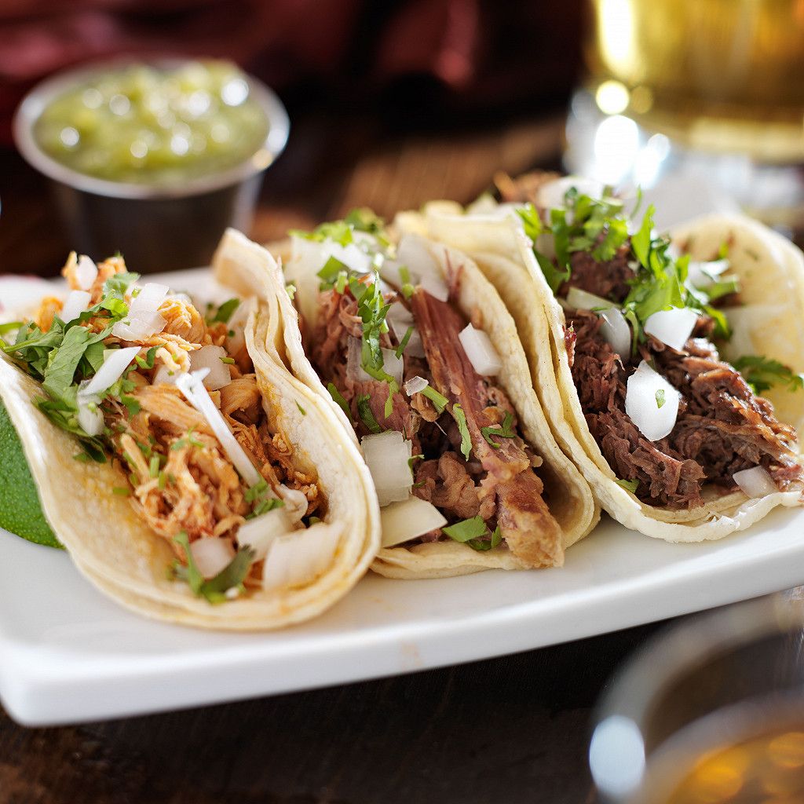

Tacos

Type de cuisine : Latino
Tranche de prix : Moins de 5$
Équilibre nutritionnel : Peu équilibré
Description du plat : Les Tacos sont un plat mexicain populaire, composé de viande, légumes et sauces dans une tortilla.
Temps de préparation : 30 min
Temps de cuisson : 25 min
Pour : 4 personnes
Ingrédients
- 1 oignon blanc
- 2 tomates
- 0.5 poivron vert
- 1 petite boîte de haricots rouges
- 1 verre de coulis de tomate (10 cl)
- 250 g de bœuf haché
- 8 feuilles de laitue
- 8 tortillas pour tacos
- Tabasco (facultatif)
- Sel
- Poivre
- Cumin en poudre
Ustensiles
- 1 poêle
- 1 pinceau
- 1 couteau
- 1 poêle à crêpes
- 1 dénoyauteur
Étapes de préparation
- A la poêle, faire dorer l'oignon émincé dans un peu d'huile d'olive.
- Rajouter la viande, assaisonner et laisser cuire 5 min.
- Laver les feuilles de laitue.
- Couper les tomates et le poivron en petits dés.
- Incorporer le tout à la poêlée avec le coulis de tomate, et poursuivre la cuisson pendant 5 min.
- Égoutter les haricots rouges et les ajouter 2 min avant la fin de cuisson.
- Hors du feu, ajuster l'assaisonnement et saupoudrer généreusement de cumin; on peut aussi rajouter quelques gouttes de Tabasco.
- Garnir les tortillas de préparation et les refermer en les roulant comme des crêpes. Disposer 1 feuille de laitue sur chaque taco avant de servir.